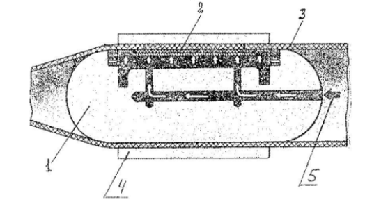
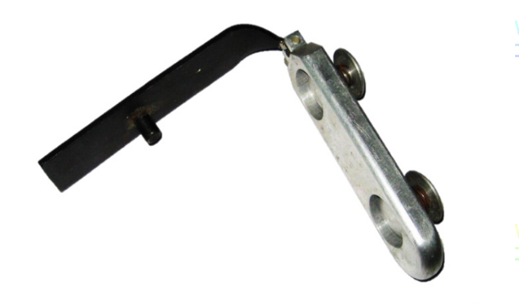
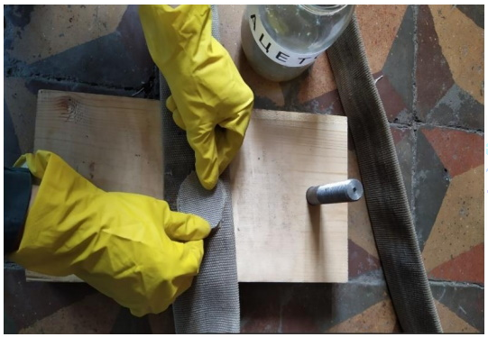
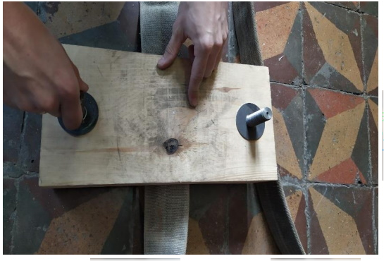

1.4.4 Ремонт
В процессе эксплуатации напорные рукава получают повреждения, которые могут быть устранены ремонтом. Ремонту подвергают вымытые и высушенные напорные рукава.
Напорные рукава, получившие повреждения каркаса, ремонтируют следующими способами:
а) вулканизацией;
б) с применением клеев.
Напорные рукава, получившие повреждения пожарных соединительных головок и мест соединений с ними, оборудуются пожарными соединительными головками заново в соответствии с п. 1.6.
Технология ремонта конкретного типа напорного рукава должна быть изложена в формуляре, составленном заводом-изготовителем.
Ремонт способом вулканизации
Для проведения ремонта вулканизацией необходимо иметь:
вулканизационный аппарат со струбцинами;
волосяную жесткую щетку;
ножницы, нож сапожный, молоток деревянный или резиновый;
от трех до пяти деревянных подкладок;
кисть для клея;
клей, бензин.
Ремонт вулканизацией осуществляется двумя способами.
Первый способ
Вулканизированный резиновый клей приготавливают из сырой клеевой резины, которую растворяют в авиационном бензине. Сырую клеевую резину нарезают мелкими кусками, помещают в плотно закрывающуюся банку и заливают авиационным бензином в соотношении: 3 кг бензина на 1 кг резины. Полученная смесь отстаивается в течение суток. По истечении этого срока набухшую резину тщательно перемешивают и в смесь еще заливают такое же количество бензина. После чего смесь в течение 2 - 3 часов снова тщательно перемешивают до получения однородной массы клея.
Ремонтируемое место напорного рукава и заплата обезжириваются путем тщательной протирки ветошью, смоченной в бензине, ацетоне или другом растворителе.
На ремонтируемое место и заплату наносят от пяти до семи слоев клея общей толщиной не более 1 мм, причем каждый следует просушивать до такого состояния, когда к клеевой поверхности не будут прилипать волоски сухой щетки. После просушки последних слоев клея на напорном рукаве и заплате заплата накладывается на ремонтируемое место и равномерно прижимается к нему легкими ударами резинового молотка.
Участок напорного рукава с наложенной заплатой кладут на плиту вулканизационного аппарата заплатой вниз и плотно прижимают к плите струбциной, под которую подкладывают деревянную доску (подкладку) размером, превышающим заплату.
Напорный рукав с заплатой выдерживают при температуре от плюс 130 до плюс 140 °C в течение от 35 до 40 мин.
Второй способ
Заплату изготавливают из сырой резины и прорезиненного полотна, применяемого для ремонта автомобильных шин. После подготовки ремонтируемого места на напорный рукав кладут сырую резину толщиной 2 мм, а на нее прорезиненное полотно. Размер заплаты из сырой резины должен быть на величину от 20 до 25 мм больше размеров поврежденного участка по всем направлениям, а заплата из прорезиненного полотна должна перекрывать заплату из сырой резины на величину от 15 до 20 мм по всем сторонам.
Наложенную заплату из сырой резины и прорезиненного полотна тщательно прикатывают к напорному рукаву, после чего вулканизируют в течение 25 мин. при температуре от плюс 130 до плюс 140 °C.
Ремонт с применением клеев
Ремонт сквозных проколов или порезов осуществляется постановкой наружных и внутренних заплат одновременно. При повреждениях напорных рукавов без нарушения целостности внутреннего гидроизоляционного слоя ремонт осуществляется наложением наружных заплат.
При использовании любого из клеев подготовка заплат и мест ремонта осуществляется в следующей последовательности:
место на напорном рукаве и заплата зачищается, у латексированных напорных рукавов в месте повреждения, кроме того, удаляется латексная пленка и поверхности склеивания обезжириваются;
на ремонтируемое место и заплату кистью наносят от одного до трех слоев клея в зависимости от склеиваемых поверхностей, причем каждый слой просушивается в течение от 15 до 20 мин. при комнатной температуре;
после просушки последних слоев клея заплата накладывается на ремонтируемое место и прижимается к нему пальцами рук или легкими ударами резинового молотка;
участок напорного рукава с наложенной заплатой целесообразно поместить в пресс или между зажимами струбцины, плотно зажать и выдержать в течение от 10 до 15 мин. при комнатной температуре.
На наружную поверхность заплаты накладывается пергамент или полиэтилен для предотвращения случайного приклеивания ее к поверхности контакта в прессе или струбцине.
Пергамент или полиэтилен вводится также в напорный рукав под ремонтируемое место во избежание склеивания внутренней поверхности гидроизоляционного слоя.
Давление, с которым заплата должна быть прижата к напорному рукаву, устанавливается из расчета 5 кг на 1 см2 поверхности заплаты и выдерживается при комнатной температуре в течение одного часа.
После этого напорный рукав извлекается из пресса и выдерживается без деформации отремонтированного места в течение от 10 до 13 часов.
Установка заплат внутрь напорного рукава производится с помощью приспособления, схема которого показана на рис. 11. Обработка внутренней поверхности напорного рукава в месте установки заплаты осуществляется через разрыв в напорном рукаве.
|
КонсультантПлюс: примечание.
Здесь и далее нумерация рисунков дана в соответствии с официальным текстом документа.
|

Рис. 21. Приспособление для прижима заплаты:
1 - камера под резиновой мембраной; 2 - заплата;
3 - напорный рукав; 4 - опорное кольцо;
5 - подвод сжатого воздуха
Воздух, подаваемый в камеру под давлением от 0,3 до 0,5 МПа, расправляет ее и прижимает заплату к ремонтируемому участку напорного рукава.
В таком положении они выдерживаются в течение одного часа, затем давление воздуха снижается до нуля, а приспособление извлекается из напорного рукава.
Заплаты изготавливают из кусков напорного рукава того же типа. Размеры заплат определяются величиной разрыва напорного рукава. При этом дается припуск от краев разрыва во все стороны на величину от 35 до 40 мм.
При ремонте проколов установка заплат внутрь напорного рукава на предварительно подготовленное место производится с помощью специального держателя заплат (рис. 32).

Рис. 32. Держатель заплат
Держатель заплат вводится внутрь напорного рукава и перемещается к месту ремонта под действием собственной силы тяжести ("протряхивается" в напорный рукав).
Заплату устанавливают на мембрану приспособления обращенной наружу клеевой стороной.
Для того чтобы заплата в процессе установки держателя к ремонтированному месту не смещалась, ее в двух или трех точках приклеивают к мембране клеем, который при высыхании и деформации мембраны отклеивается, позволяя свободно извлекать приспособление из напорного рукава.
Ремонт с применением хлорированной ткани напорных рукавов, имеющих каркас из полиэфирных нитей
Ремонт сквозных проколов и порезов каркаса рукава без нарушения целостности внутреннего гидроизоляционного слоя осуществляется постановкой наружных заплат. Ремонт с применением хлорированной ткани осуществляется в следующей последовательности (рис. 13 - 17):
1. Поврежденное место на напорном рукаве и заплата зачищается, обрабатывается ацетоном (заплата вырезается из старого списанного рукава, предварительно оторвав внутренний гидроизоляционный слой).
2. Из хлорированной ткани вырезается круг (овал) размером чуть больше размера заплаты.
3. Поврежденный рукав укладывается на струбцину или пресс поврежденным местом вверх.
4. Вырезанная хлорированная ткань смачивается в ацетоне и накладывается на ремонтируемое место, а сверху укладывается заплата.
5. На наружную поверхность заплаты накладывается пергамент или полиэтилен для предотвращения случайного приклеивания ее к поверхности контакта в струбцине или в прессе.
6. Участок напорного рукава с наложенной заплатой, помещенный в пресс или между зажимами струбцины, плотно зажать и выдержать в течение 24 часов при комнатной температуре.
7. Давление, с которым заплата должна быть прижата к напорному рукаву, устанавливается из расчета 10 - 15 кг на 1 см2 поверхности заплаты.
8. После этого напорный рукав извлекается из струбцины или пресса и выдерживается в состоянии покоя без деформации отремонтированного места не менее 48 часов.
<...>

Рис. 16

Рис. 17
Технология ремонта конкретных типов и модификаций напорных рукавов должна быть приведена в формуляре, составленном предприятием-изготовителем. По окончании ремонта ответственным за эксплуатацию напорных рукавов в формуляр вносятся сведения о ремонте (вид ремонта, характер повреждения).
Отремонтированные напорные рукава испытывают гидравлическим давлением (таблица 3) не ранее, чем через 24 часа после ремонта.
Ремонт напорных рукавов DN свыше 150 и полужестких рукавов проводится с учетом рекомендаций предприятия-изготовителя, указанных в КД на конкретные изделия.